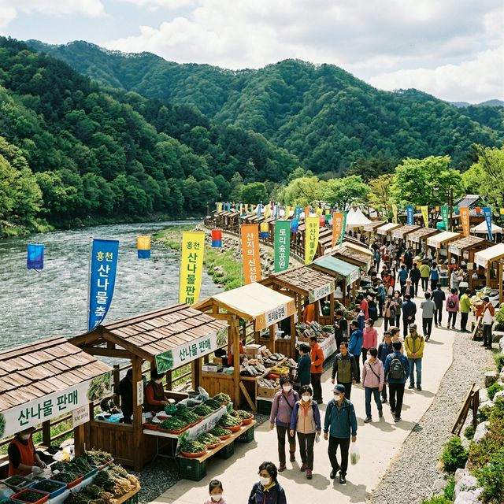
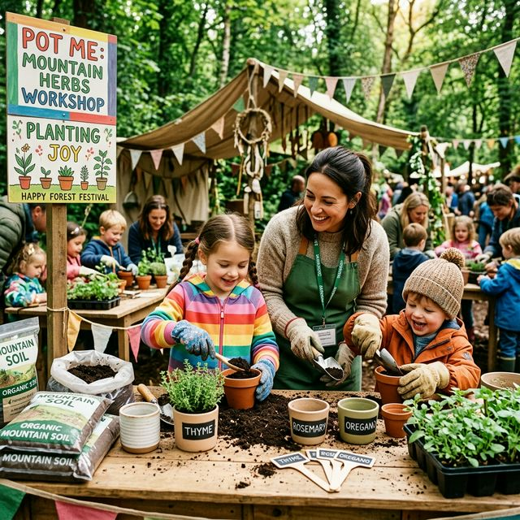
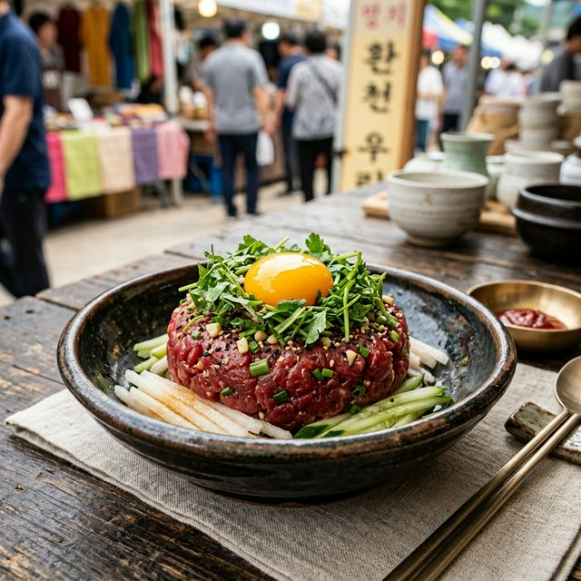

올해 홍천 산나물축제는 2026년 5월 1일(금)부터 5월 3일(일)까지 3일간 강원특별자치도 홍천읍에 위치한 도시산림공원 토리숲에서 진행됩니다. 5월의 시작과 함께
찾아오는 이번 축제는 홍천의 청정 자연에서 채취한 다양한 산나물의 신선함을 보장하기 위해 행사 기간을 산나물 채취의 최적기에 맞췄습니다.
도시산림공원 토리숲은 홍천강변을 따라 조성된 산책로와 울창한 나무들이 어우러진 시민들의 휴식처로, 축제 기간에는 활기 넘치는 장터와 축제 분위기로 가득 찰 예정입니다. 대중교통을 이용할 경우 홍천
터미널에서 택시나 버스로 5분 내외의 거리에 있어 접근성도 매우 뛰어납니다. 5월 가정의 달 첫 나들이로 홍천 산나물축제는 더할 나위 없는 선택이 될 것입니다.
| 축제 공식 명칭 | 제8회 홍천 산나물축제 |
|---|---|
| 행사 기간 | 2026. 05. 01 (금) ~ 05. 03 (일) |
| 행사 장소 | 도시산림공원 토리숲 (홍천군 홍천읍 연봉리 401) |
| 문의 처 | 홍천문화재단 (033-439-5800) |

홍천강변 토리숲에 설치된 산나물 축제장 전경 / AI 제작 이미지
홍천은 대한민국에서 가장 넓은 면적을 가진 군이자, 전체 면적의 80% 이상이 산림으로 이루어진 산나물의 본고장입니다. 해방 이후 지금까지 산림 보호가 철저히 이루어진
덕분에 홍천의 흙은 미네랄이 풍부하고 오염되지 않았죠. 이런 비옥한 토양과 맑은 공기를 먹고 자란 홍천 산나물은 타 지역에 비해 향이 훨씬 진하고 맛이 달큰한 것이 특징입니다.
특히 홍천의 명이나물(산마늘)은 전국적으로도 주산지로 손꼽히며, 잎이 넓고 부드러워 쌈이나 장아찌로 인기가 높습니다. 축제장에서는 농가에서 직접 가져온 산나물들을 중간
유통 과정 없이 바로 구매할 수 있어, 가장 신선한 상태의 나물을 저렴하게 확보할 수 있는 절호의 기회입니다. 생산자의 이름과 얼굴이 걸린 실명제 판매를 통해 신뢰도를 한층 더 높였습니다.
홍천 산나물축제의 백미는 방문객이 직접 참여하는 체험 프로그램입니다. 그중에서도 '산나물 모종 심기'는 매년 가장 빨리 마감되는 인기
코스입니다. 작은 화분에 직접 흙을 채우고 홍천에서 자란 산나물 모종을 정성스럽게 심어 집으로 가져갈 수 있는 이 체험은, 아이들에게 생명의 소중함과 농부들의 노고를 가르쳐 주는 훌륭한 교육 현장이
됩니다.
뿐만 아니라, 산나물을 활용한 수제 비누 만들기, 향긋한 산나물 차 시음회, 그리고 홍천 특산물을 이용한 요리 교실 등 풍성한 즐길 거리가 가득합니다. 토리숲의 푸른 나무
그늘 아래서 가족들과 함께 체험 부스를 돌아다니다 보면 시간이 어떻게 가는지 모를 정도로 즐거운 봄날의 추억을 쌓을 수 있습니다.

산나물 모종 심기 체험에 참여 중인 가족들의 모습 / AI 제작 이미지
현명한 산나물 쇼핑을 위해서는 오전 시간대 방문이 유리합니다. 당일 아침 산에서 직접 채취해 온 산나물들은 인기가 많아 점심시간이 지나면 품절되는 경우가 종종 있기
때문입니다. 특히 수량이 한정된 자연산 두릅이나 귀한 산당귀 등은 서둘러 확보하는 것이 좋습니다. 각 부스마다 마련된 시식 코너를 적극 활용하여 나물의 향과 맛을 직접 확인해 보세요.
구매한 산나물이 많아 무겁다면 축제장에서 운영하는 택배 서비스를 이용하는 것도 좋은 방법입니다. 신선도가 생명인 만큼 아이스팩과 함께 꼼꼼하게 포장하여 집까지 안전하게
배송해 줍니다. 또한, 가급적 현금을 준비하시면 장터 특유의 덤을 받는 재미도 느낄 수 있지만, 대부분의 부스에서 카드 결제나 모바일 페이도 가능하도록 준비되어 있어 편리하게 쇼핑할 수 있습니다.
토리숲 중앙 무대에서는 축제 기간 내내 눈과 귀를 즐겁게 해주는 다채로운 공연이 펼쳐집니다. 홍천 출신 가수들의 무대부터 지역 동아리들의 신명 나는 풍물놀이, 그리고
방문객이 직접 참여하는 레크리에이션까지 쉼 없이 이어집니다. 특히 '전국 산나물 댄스 대회'는 남녀노소 누구나 즐겁게 관람할 수 있는 활기찬 이벤트로 큰 호응을 얻고
있습니다.
저녁 시간에는 가슴을 울리는 힐링 콘서트가 열립니다. 홍천강의 시원한 밤바람과 감미로운 음악이 어우러진 공연은 낮의 분주함을 잠시 잊게 하고 여행의 낭만을 최대치로
끌어올려 줍니다. 축제장 곳곳에 배치된 버스킹 공연들도 산책하는 재미를 더해주어, 걷는 발걸음마다 기분 좋은 웃음을 자아내게 합니다.
축제 관람의 즐거움 중 식도락을 빼놓을 수 없죠. 토리숲 먹거리 존에서는 홍천의 산나물을 주재료로 한 다양한 향토 음식들을 맛볼 수 있습니다. 가장 인기가 높은 것은
홍천의 자생 나물이 가득 들어간 산나물 비빔밥과 쫄깃한 식감이 일품인 홍천 한우 산나물 육회입니다. 고소한 한우와 향긋한 산나물의 조합은
홍천에서만 느낄 수 있는 미식의 절정입니다.
또한, 홍천의 옥수수로 만든 막걸리와 갓 부쳐낸 산나물전은 최고의 궁합을 자랑합니다. 축제장 한쪽에서는 '산나물 뷔페'가 운영되어, 평소 접하기 힘들었던 서른 가지 이상의
산나물 요리를 합리적인 가격에 마음껏 즐길 수 있습니다. 자연의 맛을 그대로 살린 건강한 한 상 차림으로 여행의 에너지를 가득 충전해 보시기 바랍니다.

홍천 한우와 산나물이 어우러진 특별한 메뉴 / AI 제작 이미지
산나물축제장인 토리숲에서 차로 15분 정도 거리에 있는 공작산 수타사는 꼭 들러보아야 할 연계 관광지입니다. 신라 시대에 창건된 고찰로, 사찰 입구의 수타사 계곡을 따라
조성된 '산소길'은 평탄한 산책로 덕분에 가족 나들이 코스로 최적입니다. 계곡물 소리와 산들바람을 맞으며 걷다 보면 산나물축제에서 얻은 활력을 차분히 정리하는 명상의
시간을 가질 수 있습니다.
수타사 내에는 보물로 지정된 동종과 월인석보 등 귀중한 문화재도 소장되어 있어 역사 교육의 장으로도 훌륭합니다. 또한, 사찰 옆에 조성된 공작산 생태숲은 다양한 야생화와
수목들이 잘 가꾸어져 있어, 축제장에서 보았던 산나물들이 실제 자연에서 어떻게 자라는지 관찰해 보는 재미도 쏠쏠합니다.
축제장에서 사 온 산나물은 각 나물 고유의 향을 살리는 것이 중요합니다. 곰취나 명이나물 같은 잎나물은 살짝 데쳐서 쌈으로 먹거나, 간장 양념장에 장아찌를 담그면 그 맛이
오래 유지됩니다. 두릅은 끓는 물에 소금을 약간 넣고 데친 뒤 찬물에 바로 헹궈야 선명한 초록색과 아삭한 식감을 보존할 수 있습니다.
산나물을 조리할 때 마늘이나 파 같은 강한 양념을 너무 많이 넣으면 산나물 특유의 은은한 향이 묻힐 수 있으니 소금과 들기름(또는 참기름)만으로 가볍게 무쳐내는 것이
고수의 비법입니다. 남은 산나물은 햇볕이 잘 드는 곳에서 바짝 말려 두었다가 겨울철 나물 반죽이나 국거리로 활용하면 일년 내내 홍천의 봄을 식탁 위에서 만끽할 수 있습니다.
홍천 산나물축제를 즐겁게 관람하기 위해선 편안한 복장과 도보용 신발은 기본입니다. 5월의 햇살 아래 야외 활동이 많으므로 모자와 선글라스를 챙기는 것이 좋습니다. 축제장은
공공장소 이므로 애완동물과 동반 시에는 목줄 착용과 배변 처리를 철저히 해주셔야 하며, 발생한 쓰레기는 반드시 지정된 장소에 배출하는 높은 시민 의식을 보여주시길 부탁드립니다.
주말에는 방문객이 많아 주차가 어려울 수 있으니 홍천강 하상 주차장 등 주변 임시 주차장 정보를 미리 파악해 두시는 것이 좋습니다. 홍천의 넉넉한 인심과 청정한 기운이
가득한 이번 산나물축제에서 여러분의 일상에 즐거운 활기를 가득 채워가시길 바랍니다.